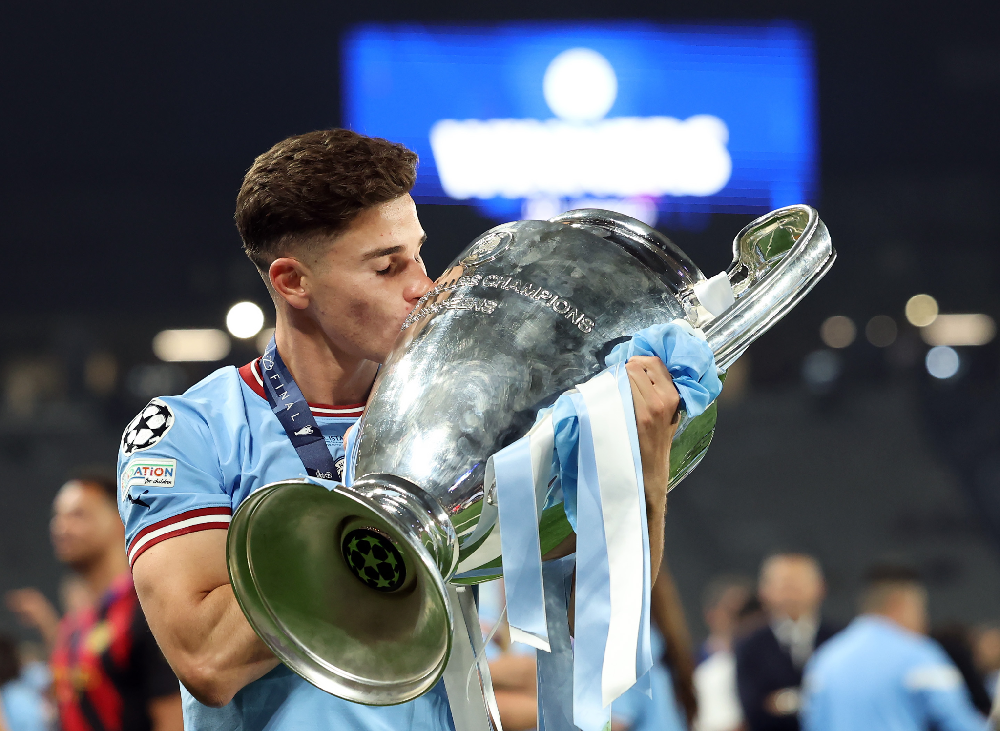
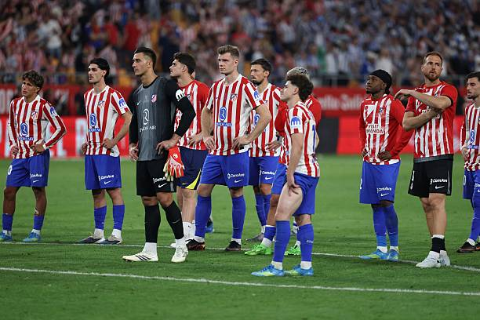

El culebrón por el futbolista argentino Julián Álvarez sigue activo, no se entiende el papelón del Atlético de Madrid que no deja salir a un jugador que no quiere pertenecer en su equipo.
Pongámonos en el caso de una empresa normal y corriente, si un empleado quiere dejar de trabajar en ese sitio, dando muestras públicas y comentándolo en privado con su jefe, lo más normal sería que ese empleado ya no trabaje más en esa empresa.
Pues ese mismo caso es el de Julián Álvarez, el talentoso futbolista que salió del Manchester City en el año 2024, se unió al Atlético de Madrid por 70 millones de euros más 20 millones en variables. Un traspaso que a simple vista parece un paso atrás en su carrera, ya que venía de ganar la UEFA Champions League, dos Premier League, la Supercopa de Europa, un Mundial de Clubes, una FA Cup y la Supercopa de Inglaterra, por lo que en cuanto a títulos, el equipo inglés es una máquina de añadir trofeos a su vitrina, y más aún en comparación con el Atleti que hace cinco años que no gana un título.
Pero en el Manchester City no tenía un sitio asegurado como 9 titular, ya que ese puesto lo ocupaba (y sigue ocupando) Erling Haaland, por lo que la salida al Canillejas parecía un buen destino, ya que ahí sí debería ser un fijo en el equipo del Txolo, pero nada más lejos de la realidad, su compatriota Simeone prefería más al moai noruego que a la araña en muchas ocasiones.

En la temporada 2024/2025, el Atlético de Madrid desembolsó 188 millones en fichajes para reforzarse, siendo el equipo que más gastó de LaLiga.
Cualquiera pensaría que ese sí sería el año del club de San Blas, pero ciertamente fue un fracaso de un equipo que solo le interesa más el "honor" que el ganar títulos.
En liga, el equipo rojiblanco quedó tercero con 76 puntos por detrás del Real Madrid (segundo) con 84 y del FC Barcelona (primero) con 88 puntos. Además cabe resaltar la remontada que sufrieron en la jornada 28 ante los culers, de ir ganando 2-0 a ver como acaban 2-4 y sin opciones de ganar la liga por otro año más.
En la copa del rey, el Atleti fue eliminado en su propio estadio ante el FC Barcelona, tras un 4-4 en la ida, el Barça supo encontrar la victoria con un 1-0 simple pero que certificó el pase a la final de copa (que luego ganarían ante el Real Madrid).
Por último, en la UEFA Champions League llegaría el máximo ridículo de todos perpetrado por el Txolo Simeone, cayeron en octavos de final ante su máximo rival, el Real Madrid y en casa nuevamente, en la ida ganaron los merengues 2-1 y en la vuelta 1-0 en el tiempo reglamentario gracias a que el técnico argentino se volvió a echar atrás, llevando el partido a penaltis y perdiendo.
En esa misma tanda, si es verdad que ocurrió el fallo de Julián Álvarez con los dos toques, ese es otro tema del que hablar en otro momento (picotazo arbitral del Real Madrid).
Hablando de Julián Álvarez, el argentino registró en liga 17 goles y 4 asistencias en 37 partidos, 5 goles y 2 asistencias en 7 partidos en copa del rey y 7 goles y 1 asistencia en 10 partidos en Champions League. Números bastante decentes para jugar en un equipo que se echa atrás siempre que va ganando y no plantea nada en los partidos.
El Coslada iría con todo a por la temporada 2025/2026 gastando 230 millones de euros en fichajes, y con esto ahora si que si, era momento de ganar algo, aunque sea la supercopa de arab- España, perdón…
Pues no, pese a que no fue un ridículo como la temporada anterior, sí fue un fracaso, ya que nuevamente los trabajadores del museo no añadirían un metal nuevo a las vitrinas, su trabajo esa temporada simplemente fue limpiar el polvo de ellas.
La temporada de los colchoneros empezó con la Audi Cup que se renombró ahora como Mundial de Clubes, jugaron tres partidos de fase de grupos y ahí se quedaron, lo mejor de todo es que jugaron contra el PSG (perdieron 4-0), Seattle (ganaron 1-3) y Botafogo (ganaron 1-0 pero no les fue suficiente jaja).
En la supercopa de España harían el ridículo nuevamente ante el Real Madrid perdiendo 1-2 en la semifinal.
En liga, el equipo rojiblanco quedó CUARTO con 69 puntos por detrás del Villarreal con 72 puntos, del Real Madrid (segundo) con 86 y del FC Barcelona (primero otra vez) con 94 puntos.
En la copa del rey, el Atleti llegó a la final tras ganar en semis a un Barça que casi les remonta un 4-0. Total, no les sirvió de mucho pasar porque la Real Sociedad ganó en los penaltis y se quedaron con la medalla de plata en un partido en el que Julián Álvarez marcó un golazo para empatar el partido antes del minuto noventa.
Por último, en la UEFA Champions League también eliminarían a un Barça en cuartos que nuevamente por poco les remonta la eliminatoria, aun así las semis serían su techo porque serían eliminados por el Arsenal, firmando así un nuevo nadaplete tras su enorme gasto en fichajes.

Julián Álvarez registró en liga 8 goles y 4 asistencias en 29 partidos, 2 goles y 1 asistencia en 4 partidos en copa del rey y 10 goles y 4 asistencias en 15 partidos en Champions League. No fue su mejor temporada en cuanto a números, sobre todo en liga, eso está claro.
Dado el contexto, podemos afirmar que el paso de Julián Álvarez por el Atleti no es lo que se esperaba, puede ser que el argentino no fuera consciente de lo cansinos que son los rojiblancos y que su entrenador prefiere encerrarse atrás en vez de competir de tú a tú a los rivales, algo que no beneficia en nada al juego de la araña.
Pese a este desastre, el Atleti tiene la oportunidad de aceptar 100 millones de euros por un jugador que no quiere seguir en su cochambroso equipo pero se niegan en rotundidad para contentar a la borregada de su afición que prefiere cantar bajo la lluvia que levantar un título.
No solo el ridículo es encerrarse en banda y no dar brazo a torcer, los judios (recordemos que el 32% del club pertenece a un israelí) hacen mofas en redes sociales sobre que van a comprar a los jugadores del Barça con suscripciones de Spotify y demás chorradas (sí, no va en coña, el departamento de comunicación dio luz verde a eso).
Pues si, el Atlético de Fuencarral y su complejo de equipo pequeño va a quedarse con un jugador que no quiere seguir ligado a ellos y rechazar ofertas de 100 millones que podrían usar para reforzarse.
Estamos ante uno de los equipos más ridículos del país, el cual tienen al entrenador mejor pagado del mundo para que diga en rueda de prensa que los muchachos estuvieron bárbaros o que la culpa es suya.
A decir verdad y viéndolo con perspectiva, Sergio Ramos salvó el fútbol allá por 2014 con su remate de cabeza, una champions de este equipo es lo peor que nos podía haber pasado como amantes de este deporte.
El equipo del pueblo, con los abonos a 2020 euros siendo una cárcel de talento y dando una imagen nefasta ante los jóvenes y jugadores top mundial que, por algún motivo, les haya dado por pensar en unirse a ese equipo, viendo que si quieren salir de ahi, no podrán por puro ego y rencor.
A nivel deportivo e institucional es absurdo retener a futbolistas que no quieren estar.
← Volver a Opinión